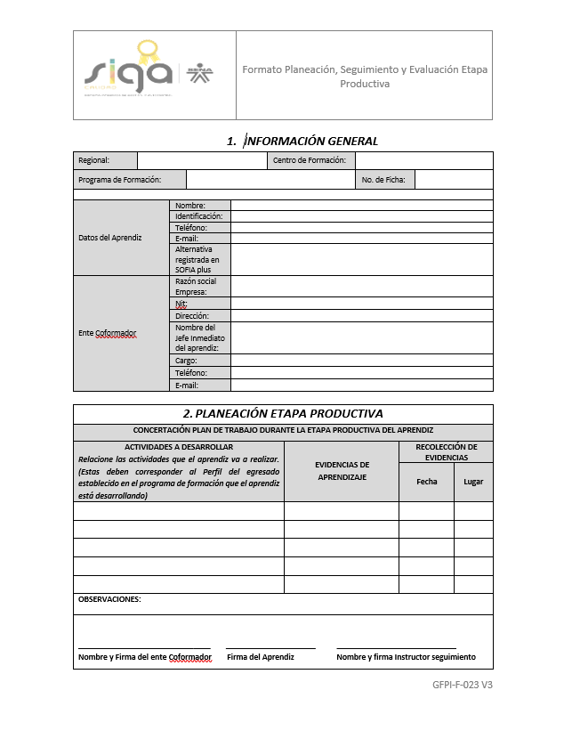

Formato 023 Concertación
Descarga el formato limpio para diligenciar, recuerda no modificarlo para no tener inconvenientes.
- Descarga
- Diligencia
- Entrega
Descarga el formato limpio para diligenciar, recuerda no modificarlo para no tener inconvenientes.
Descarga el formato limpio para diligenciar, recuerda no modificarlo para no tener inconvenientes.
Descarga el formato limpio para diligenciar, recuerda no modificarlo para no tener inconvenientes.
Descarga el formato limpio para diligenciar, recuerda no modificarlo para no tener inconvenientes.